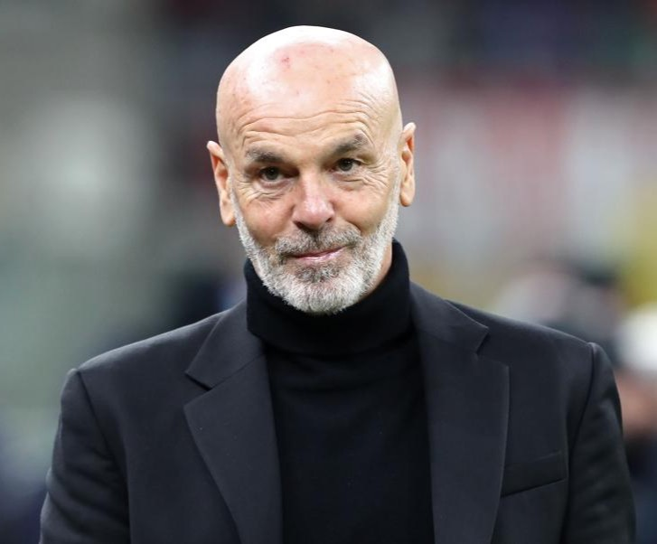

A Rossoneri dicsőséges útja
"We will be a team of devils. Our colours will be red like fire and black like the fear we will invoke in our opponents." - 1899, Herbert Kilpin
Alapítás és a régi sikerek
- A klubot 1899. december 16-án alapította egy angol emigráns, Herbert Kilpin, eredetileg Milan Foot-Ball and Cricket Club néven. Az első Scudetto-jukat 1901-ben nyerték, megszakítva ezzel a Genova győzelmi sorozatát.
- A Gre-No-Li éra (1950-es évek): Ebben az évtizedben a svéd trió, Gunnar Nordahl (a klub történetének egyik legjobb góllövője), Gunnar Gren és Nils Liedholm vezetésével a Milan ismét dominánssá vált, számos bajnoki címet nyerve.
- A Nereo Rocco éra (1960-as évek): Az 1960-as években Nereo Rocco edző és a kapitány, Gianni Rivera vezetésével a Milan megnyerte az első Bajnokcsapatok Európa Kupáját (BEK) 1963-ban (a Wembley Stadionban a Benfica ellen). Rocco vezette be a forradalmi catenaccio (zárolás) taktika egyik legkorábbi, támadóbb változatát.
- A Berlusconi-Korszak (1986-2017): Silvio Berlusconi 1986-ban vette át a klubot. Ez a korszak a klub aranykora. Három korszakalkotó holland játékos, Marco van Basten, Ruud Gullit és Frank Rijkaard érkeztek.
- Arrigo Sacchi edző irányításával (1987-1991) forradalmi pressing (letámadás) taktikával 2 BEK-et nyertek.
- Fabio Capello irányításával (1991-1996) a csapat négy Scudetto-t és egy Bajnokok Ligáját nyert.
- Carlo Ancelotti Éra (2001-2009): Ebben az időszakban két Bajnokok Ligája trófeát (2003, 2007) és egy Seria A címet (2004) nyert a csapat olyan játékosokkal, mint Paolo Maldini, Andrij Sevcsenko, Kaká és Andrea Pirlo.
Allegri éra
Massimiliano Allegri 2010-ben érkezett a Milan kispadjára, és azonnal sikert aratott. Az Allegri által vezetett csapat - amelyben még olyan legendák is szerepeltek, mint Andrea Pirlo, Clarence Seedorf, Gennaro Gattuso, és olyan friss igazolások, mint Zlatan Ibrahimović és Thiago Silva - 2011-ben, hét év után először nyerte meg a Serie A bajnoki címét (a 18. Scudetto-t). Bár az első időszaka 2014-ben véget ért, ő volt a felelős a Berlusconi-korszak utolsó nagy bajnoki sikeréért. Allegri második, rendkívül várt időszaka a klubnál az idei 2025/2026-os szezonban kezdődött. A tapasztalt edző visszatérése a Rossoneri kispadjára azzal a céllal történt, hogy a klub ismét a nemzetközi elitbe emelkedjen, ötvözve a klub dicső múltjának pragmatizmusát a fiatal és dinamikus keret energiájával.
Pioli éra (2019-2024)
Érkezése fordulópontot jelentett a klub stabilizálásában és felemelkedésében, egy hosszabb, trófea nélküli időszak után. Pioli egy fiatal, éhes és mentálisan erős csapatot épített, amelyet olyan kulcsjátékosok fémjeleztek, mint Zlatan Ibrahimović (aki mentorként is szolgált), Rafael Leão és Theo Hernández. Ez a fiatal Rossoneri gárda 2022-ben megszerezte a klub áhított 19. Scudetto-ját, tizenegy év szünet után visszatérve Olaszország trónjára.
Bernáth Milán